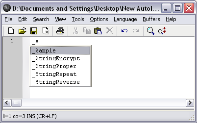
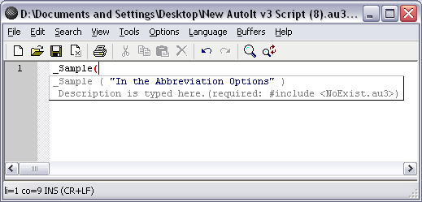

When you add your own UDFs to the Autoit include folder, you may want to add them to Scite with Calltips. This feature has been added to make it easy for people who wish to do so.
You just need to open User CallTips Entries in the Tools menu of Scite. Then add your entries. The basic syntax is:
_FunctionName ( "Title", "Text" ) Your function description.(required: #include <YourFile.au3>).
This makes it easy to manage your favorite created or collected UDFs. No more searching through the Includes folder, for the correct syntax or any other reason. This is not a feature to stop you sharing UDFs, but to make it easy till such time, when the UDFs maybe selected to be included with Autoit.
As you can see from the picture. Adding your own CallTips is quite easy, within this version of Scite.
Below, shows "_Sample" that was added. This is how it popups in Scite.

Below shows _Sample, after the brace is inserted.

( This file is located in Scite Directory \ api \ au3.user.calltips.api for any reason to backup. )